(A) how we treated my vomiting leaf till it was asycophant: we tossed it, tickled it, set it free; till it rocked our whole world flat; till it knocked open our done topped earth and... we ripped all our petals in shreds
(B) where did our grand stuck holy bird go—after we riled up its mutters and stacked its turning goats; did it rush through its furs and leave for good? or did it rip up our soft and weak hearts, meeting a rippled horizon
(C) inside our whole big train every short skirt tucked under, and then found our flowing past; we didn't feel the trees; we watched the rain flow our bellies and helped the swans as they rocked side to side and our thoughts didn't turn out the way we'd hoped but they were enough to hold us
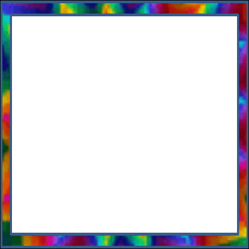
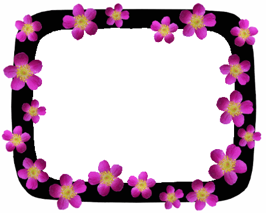
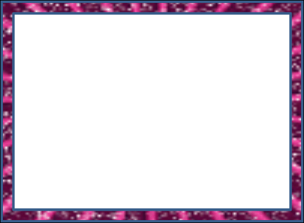
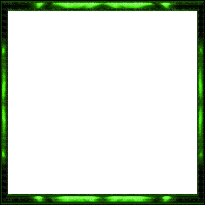
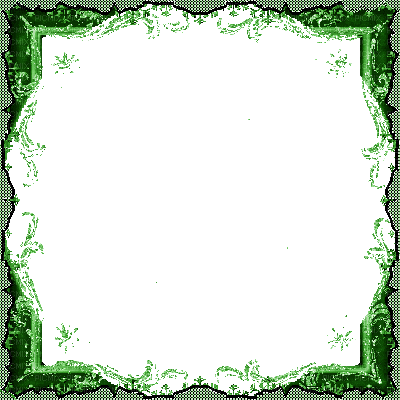
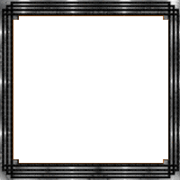
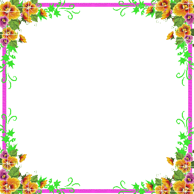
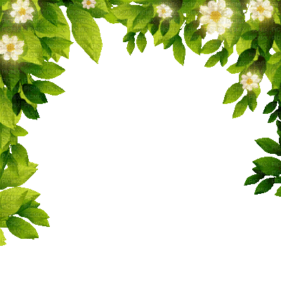
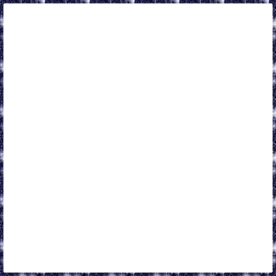
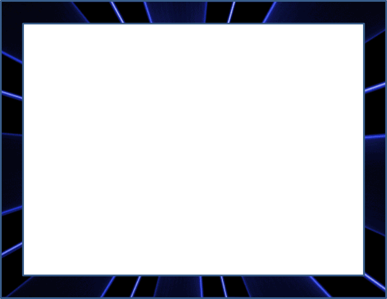
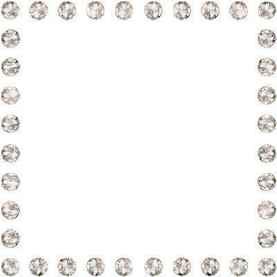
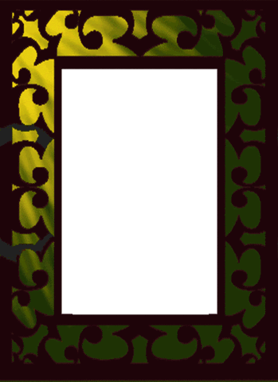
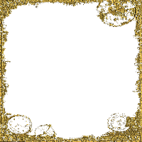
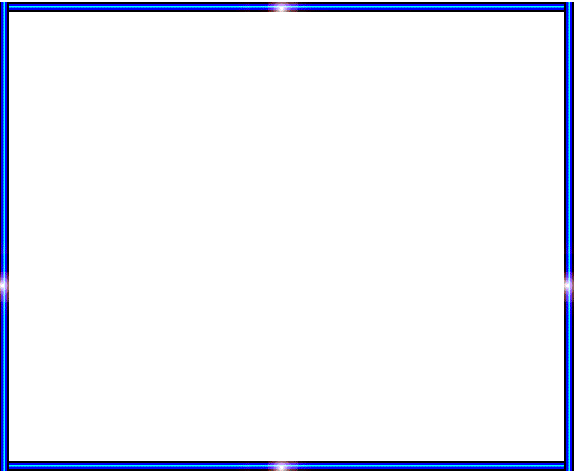
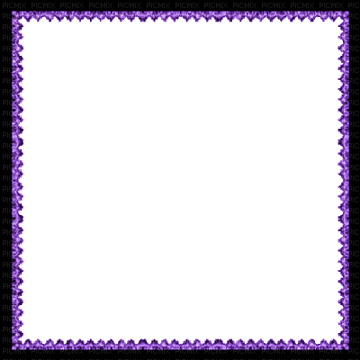
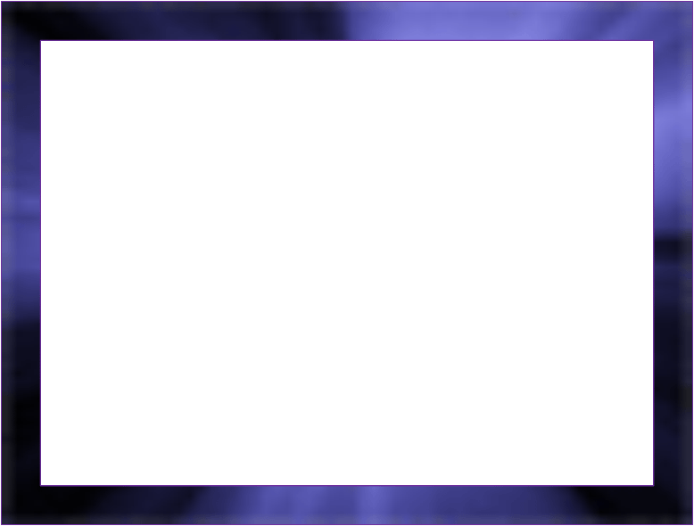
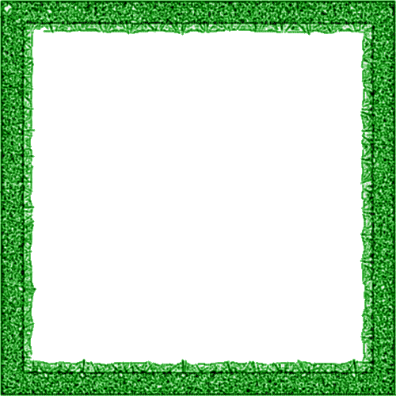
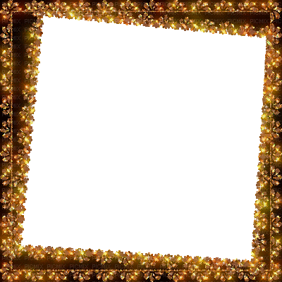
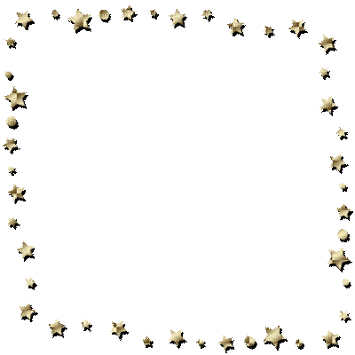
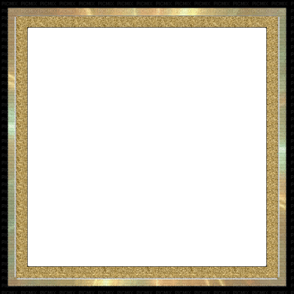
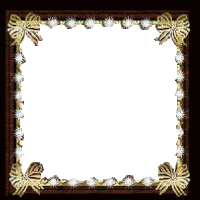
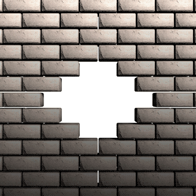


screenshot (A)
screenshot (B)
screenshot (C)